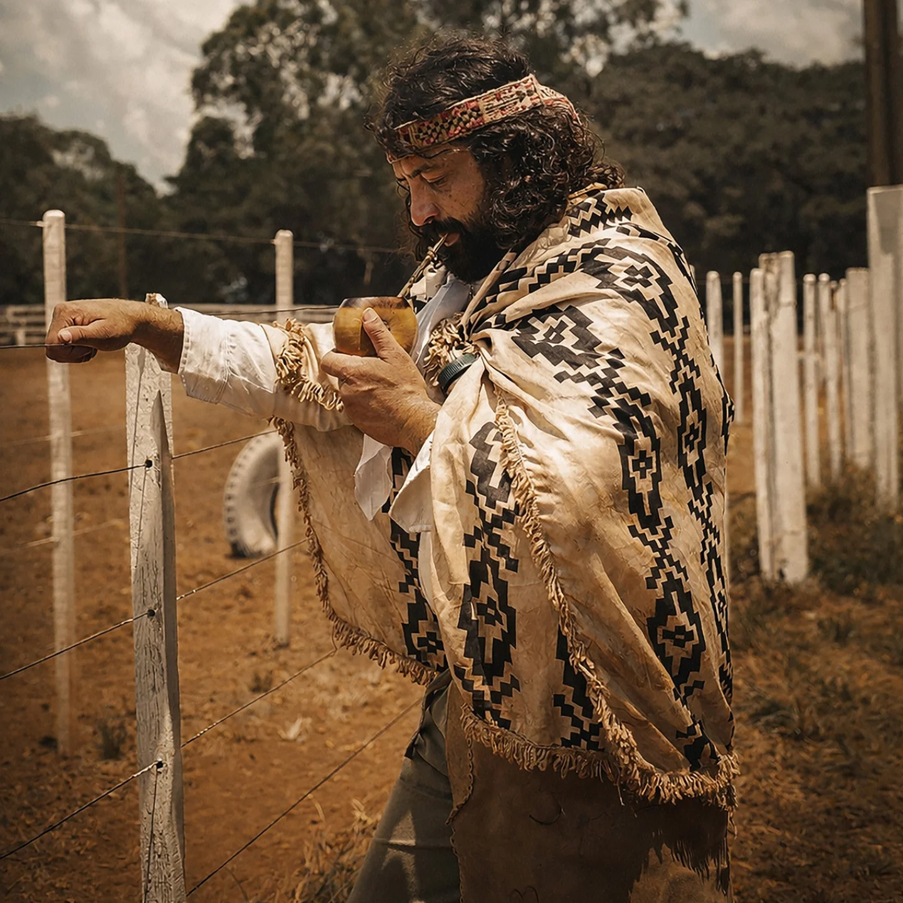
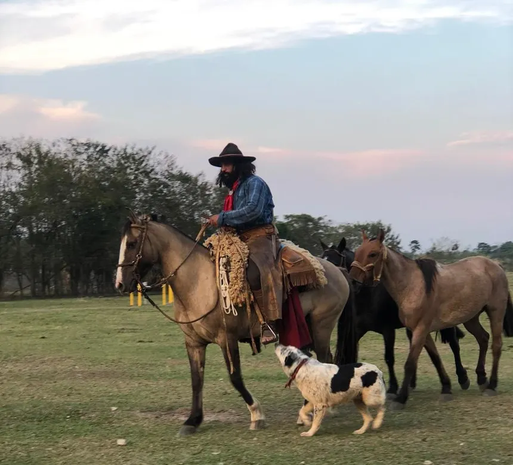
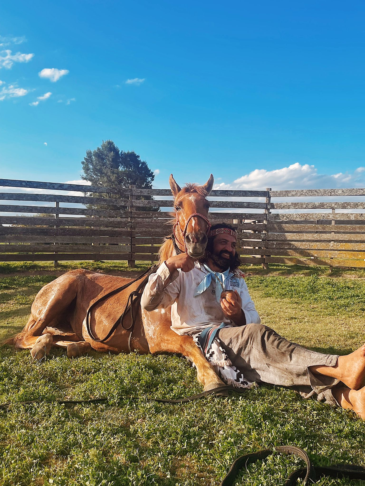
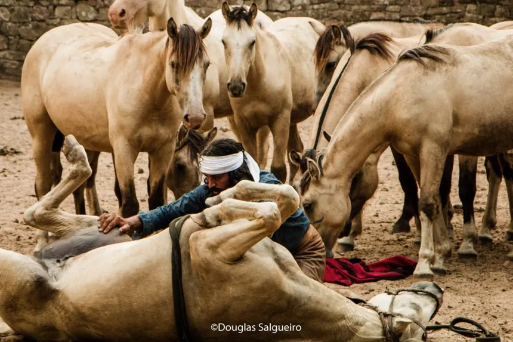
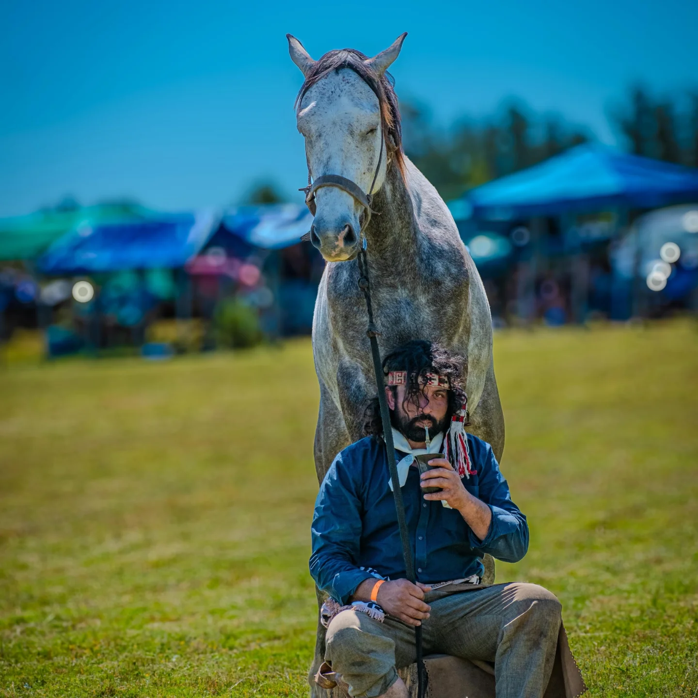
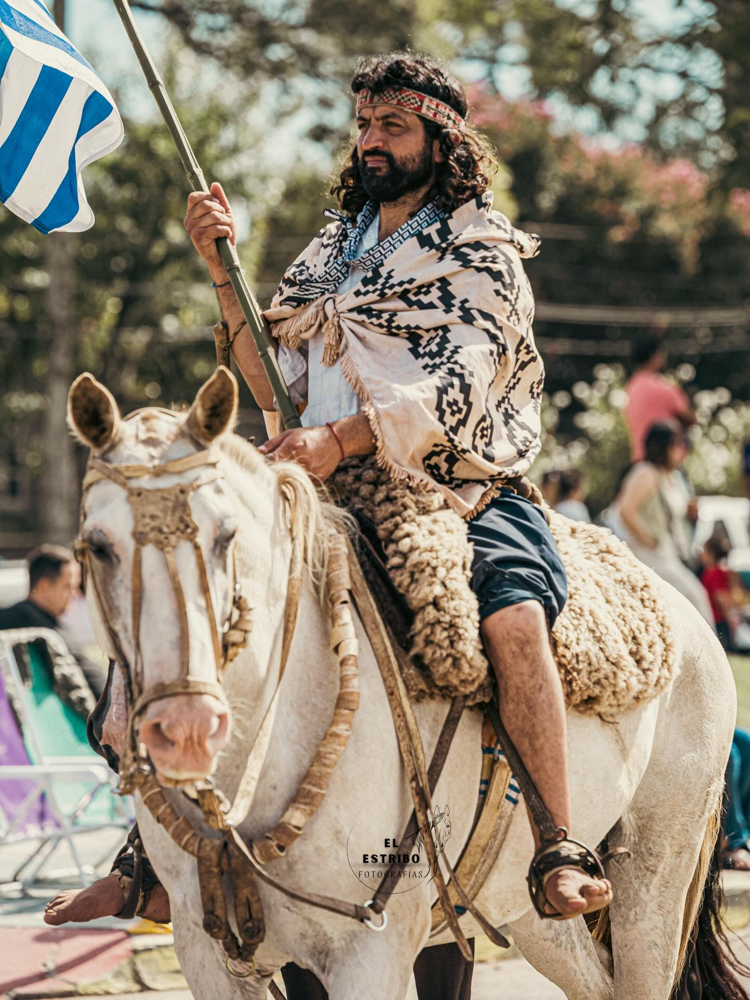
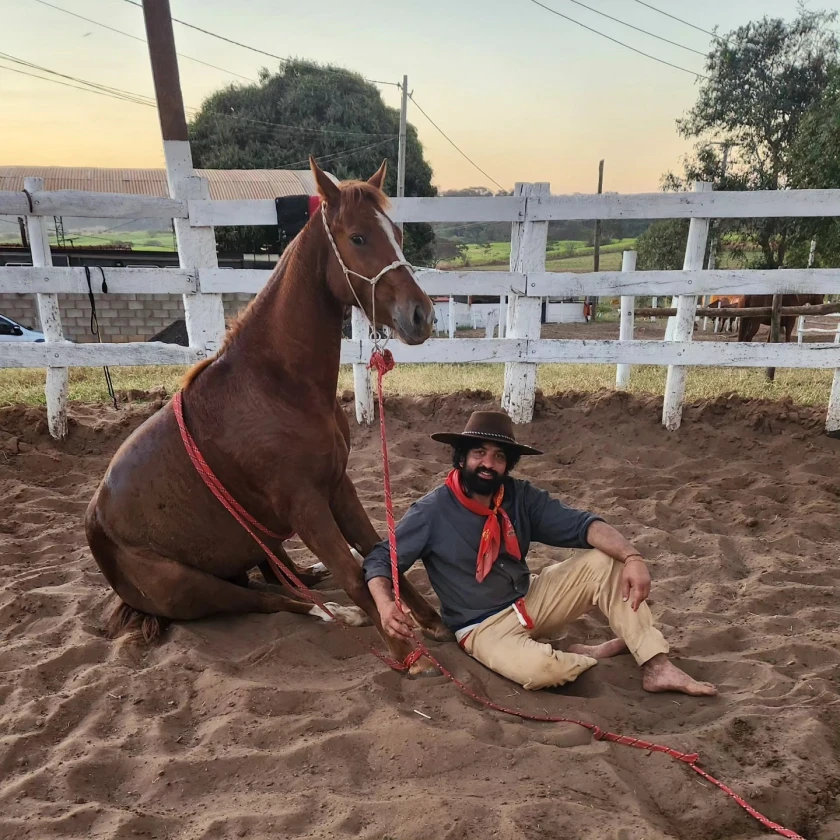

Donde el campo se convierte en leyenda
y el potro aprende el idioma del alma.
Criador, amansador y psicólogo de caballos. Guardián de una tradición que se transmite con paciencia, respeto y amor a la tierra.

Ronival Ferreira
El Bruxo dos PotrosNació en el campo brasileño, entre trabajo duro y caballos. Desde los 11 años sufrió ataques epilépticos, pero ningún obstáculo apagó su pasión. A los 13 dejó todo para perseguir su sueño.
En 2012, una tragedia personal lo llevó al límite. Fue entonces, en su momento más oscuro, cuando los caballos curaron su alma y nació el "Bruxo dos Potros".
Hoy es domador, maestro y psicólogo ecuestre. Su método: paciencia, lectura corporal y confianza mutua. Sin violencia, sin imposición. Solo diálogo.
Su mundo, su trabajo, su identidad.





Las palabras que lo definen.
El caballo no se hipnotiza. Pero podés transformar su miedo en confianza. Es un proceso de paciencia, persistencia y observación.
Aprender a lidiar con un caballo también te enseña a lidiar con otras personas. La clave está en entender su lenguaje.
Los caballos me enseñaron que la vida es un aprendizaje constante. Cuando creo que sé algo, siempre hay algo nuevo por descubrir.
El camino de un domador nunca se detiene. Siempre hay algo nuevo que aprender, algo más que enseñar.
Me gusta siempre aprender, aprendo de los más antiguos también. La vida es un intercambio de aprendizajes y lecciones.
Próximamente
Seguí de cerca lo que viene: cursos, eventos y el mundo del Bruxo dos Potros cada vez más cerca de vos.